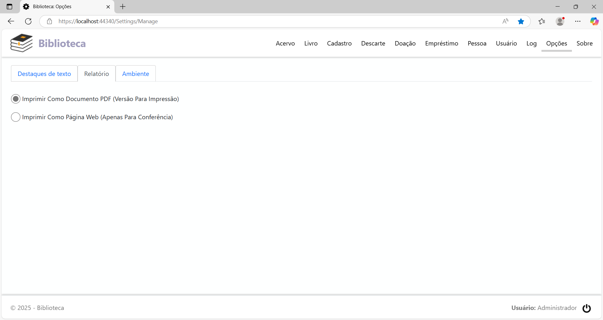
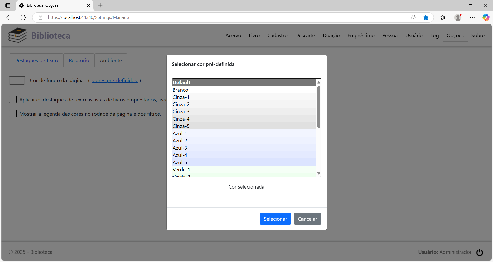
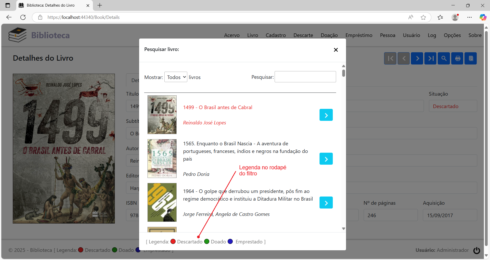

Menu Opções
Clicando na opção de menu Opções, será exibida a página de configuração. Esta página permite que cada usuário configure a aplicação de acordo com sua preferência.
As opções de personalização são as seguintes:
Cor de Texto e Estilo de Fonte
Esta configuração permite escolher a cor de texto e o estilo de fonte (negrito, sublinhado, itálico) para destacar as linhas correspondentes a livros que foram descartados, doados e emprestados em relatórios e nas páginas da aplicação. Por padrão, a cor de texto para livros descartados é vermelho e sem nenhum estilo de fonte aplicado, a cor de texto para livros doados é verde e sem nenhum estilo de fonte aplicado e a cor de texto para livros emprestados é azul e sem nenhum estilo de fonte aplicado.
Para trocar a cor de texto, na guia Destaques de texto, clique no botão à direita da caixa Cor de Texto. Vai abrir o seletor de cores logo abaixo do botão:
No seletor, mova com o mouse para escolher a cor desejada ou digite diretamente os valores nos campos R, G e B.
Ao clicar na área fora dos limites do seletor de cores, a nova cor é aplicada ao texto de dica.
Para aplicar os estilos de fonte ao texto, marque ou desmarque os campos de seleção da caixa Estilo de Fonte, correspondendo aos estilos Negrito, Sublinhado e Itálico. Assim que um estilo é aplicado, o texto de dica na caixa Cor de Texto sofre as alterações para refletir as mudanças.
Para restaurar as configurações padrão de cores e estilos, clique no botão Restaurar.
Formato dos relatórios
Por padrão, o formato dos relatórios gerados é o PDF. Porém, há também a opção de gerar os relatórios em formato HTML. O formato PDF está configurado para impressão em papel, e o HTML para impressão e para conferência em tela, haja vista que ele é renderizado mais rapidamente que o PDF.
Para configurar o formato do relatório, na guia Relatórios, selecione o formato que deseja aplicar.

Configuração do ambiente
Para selecionar a cor de fundo da página, na guia Ambiente, clique no botão à esquerda do texto Cor de fundo da página. Vai abrir o seletor de cores logo abaixo do botão:
No seletor, mova com o mouse para escolher a cor desejada ou digite diretamente os valores nos campos R, G e B.
Clicando no link Cores pré-definidas, abre o seguinte diálogo:

Selecione na lista a cor desejada e clique no botão Selecionar.
A cor de fundo da página é aplicada assim que a cor é selecionada:
Se marcar a opção Aplicar os destaques de texto às listas de livros emprestados, livros descartados e livros doados, as listas nas respectivas páginas terão a cor de texto e estilos de fonte aplicados a cada uma de suas linhas.
Se marcar a opção Mostrar a legenda das cores no rodapé da página e dos filtros, será exibida a legenda das cores nos locais em destaque:
